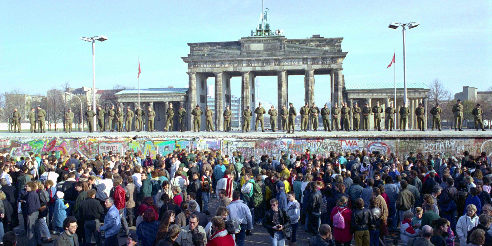
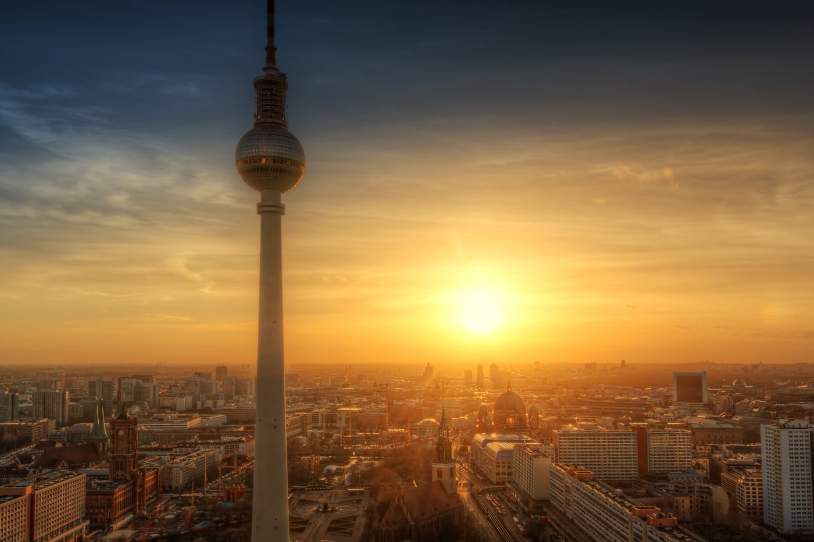
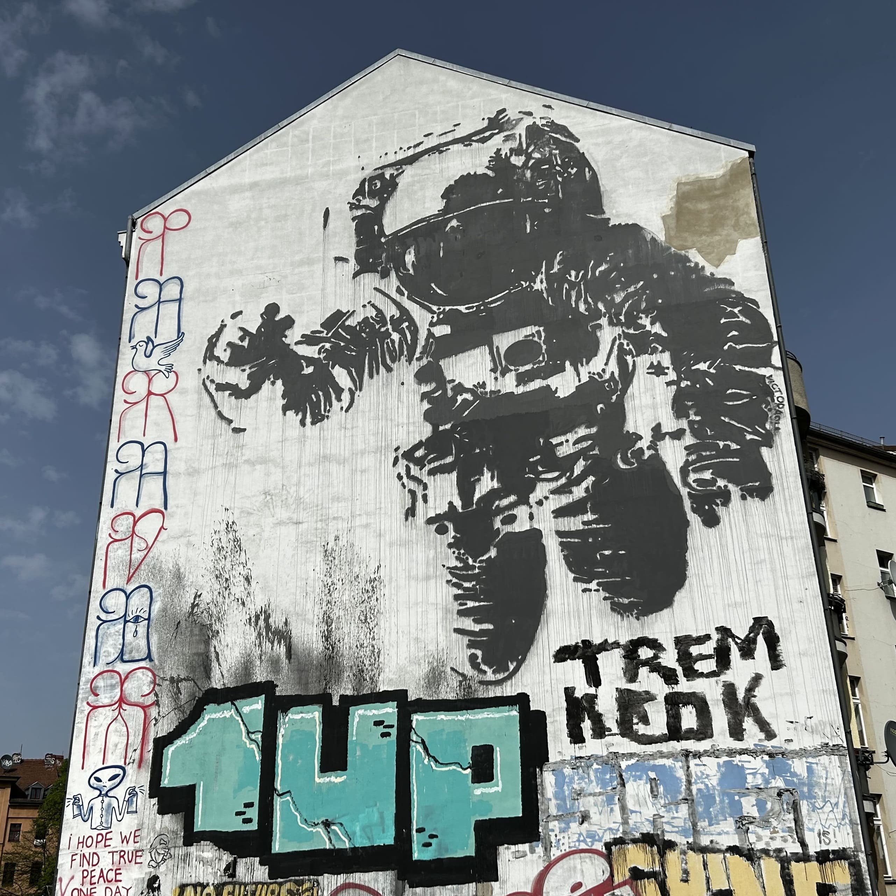
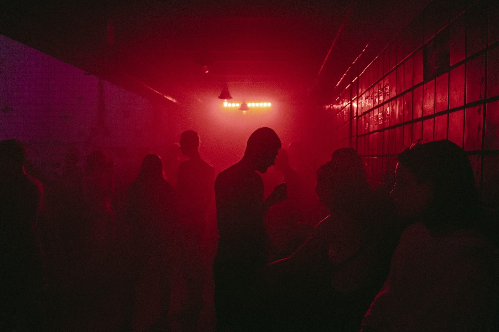
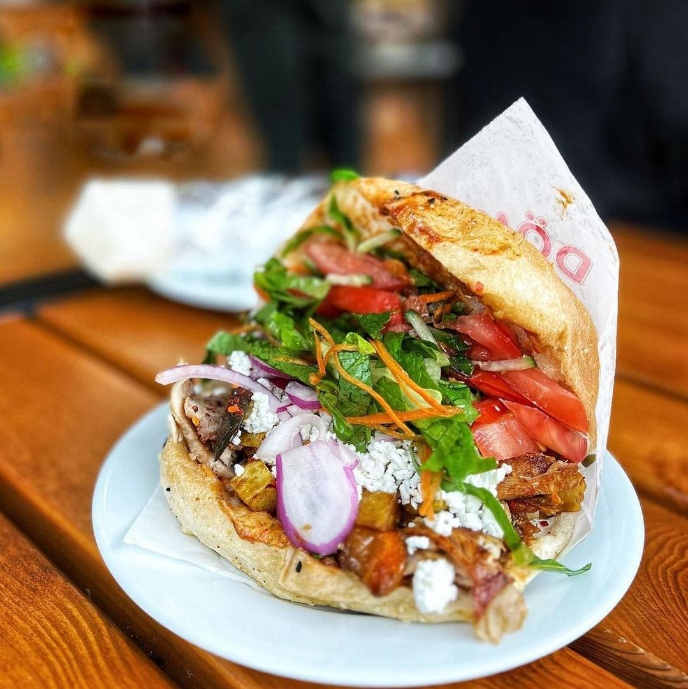
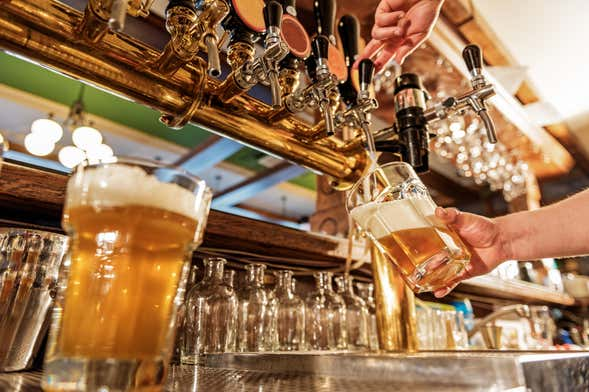

Historia del Muro de Berlín: construcción, vida y caída
Berlin Wall History: Construction, Life and Fall
28 años dividió una ciudad, una nación y un continente. Todo lo que necesitas saber antes de recorrer los restos del Muro.
28 years divided a city, a nation and a continent. Everything you need to know before walking the Wall's remnants.

Qué ver en Berlín en 3 días: itinerario completo
Berlin in 3 Days: Complete Itinerary
El itinerario definitivo para aprovechar al máximo tres días en la capital alemana, con los imprescindibles y secretos locales.
The ultimate guide to making the most of three days in the German capital, with must-sees and local insider secrets.

Berlín en 1 día: misión (casi) imposible
Berlin in 1 Day: Mission (Almost) Impossible
¿Un solo día en Berlín? La ruta exprés más eficiente, con humor y sin museos. Para el que no tiene tiempo pero tiene ambición.
Only one day in Berlin? The most efficient express route, with humour and zero museums. For those short on time but big on ambition.

Free tours en Berlín: guía completa para hispanohablantes
Berlin Free Tours: Complete Guide
Qué es un free tour, cómo funcionan, qué cubren y cómo elegir el mejor. Todo sobre los tours gratuitos en Berlín en español.
What is a free tour, how they work, what they cover and how to choose the best one. Everything about free tours in Berlin.

Sachsenhausen: cómo llegar y qué esperar
Sachsenhausen Concentration Camp: How to Get There
Guía práctica para visitar el campo de concentración de Sachsenhausen: transporte, horarios, qué ver y cómo prepararse emocionalmente.
Practical guide to visiting Sachsenhausen: transport, opening hours, what to see and how to prepare yourself emotionally.
Berlín con poco presupuesto: guía completa
Berlin on a Budget: Complete Guide
Cómo disfrutar Berlín sin gastar de más: alojamiento barato, comida local, transporte y todo gratis que ofrece la ciudad.
How to enjoy Berlin without overspending: cheap accommodation, local food, transport and everything free the city has to offer.

Arte urbano en Berlín: del Muro a Kreuzberg
Berlin Street Art: From the Wall to Kreuzberg
East Side Gallery, Warschauer Strasse, Kreuzberg y Neukölln: los mejores barrios y rincones para descubrir el arte callejero de Berlín.
East Side Gallery, Kreuzberg, Neukölln and beyond: the best neighbourhoods and spots to discover Berlin's world-class street art scene.

Techno en Berlín: la guía definitiva
Berlin Techno: The Definitive Guide
Berghain, Tresor, Watergate y más: la historia del techno berlinés, los mejores clubs y consejos para entrar (o no) en la puerta.
Berghain, Tresor, Watergate and more: the history of Berlin techno, the best clubs and tips for getting past (or not) the door.

Qué comer en Berlín: döner, currywurst y mucho más
What to Eat in Berlin: Döner, Currywurst and More
La guía gastronómica de Berlín: desde el döner de Mustafa's hasta el Markthalle Neun, pasando por la cocina vietnamita y árabe de la ciudad.
Berlin's food guide: from Mustafa's döner to Markthalle Neun, via the city's Vietnamese and Arab cuisine scenes.

La cultura de la cerveza en Berlín
Berlin Beer Culture: Biergärten, Kneipen and Craft Beer
Biergärten al aire libre, Kneipen de barrio y la escena craft: todo lo que necesitas saber para beber bien en Berlín.
Open-air beer gardens, neighbourhood Kneipen and the craft scene: everything you need to know to drink well in Berlin.